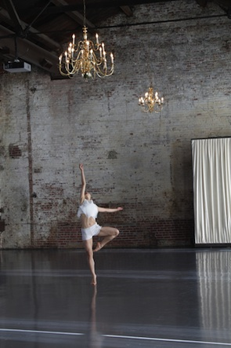

News
August 2014 "Echo" is now a completed film and we have started to enter it into film and dance festivals. Thanks again to all of our supporters! Please check out our trailer
Feb 19, 2014 The filming has wrapped for "Echo", my Kickstarter project! We will be selecting and sending out some great film stills to our backers and we will start the editing process come March. Below is a photo of one of the dancers in our filming location, the Green Building in Brooklyn's Gowanus area. Come follow our progress as we move towards completing our first dance film!
Jan 8, 2014 My Kickstarter project has been 122% funded and we are starting rehearsals this week for the film. Thanks to all who helped us reach our goal!!
Dec 1, 2013: I have lauched a Kickstarter project! Please check it out and donate if you feel moved to do so.
Recent Work

Quejas
A work in progress about the act of complaining, whether it takes a private, internal form, or the outward form of protest.

Poet. Water. Stone.
Inspired by the story of the Qu Yuan, an ancient Chinese poet who drowned himself to protest government corruption.